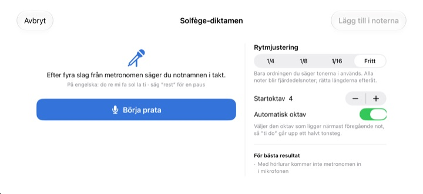
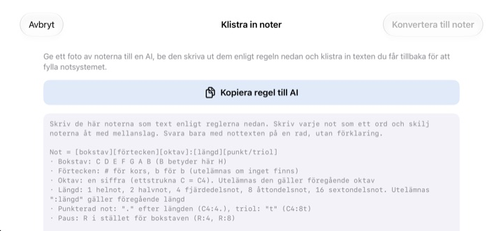

Sluta räkna i huvudet.
Lyssna i stället.
För över de två takter du snubblar på och tryck på spela. Efter en takts inräkning spelar appen dem till metronomen, med exakt den rytm och tonhöjd som står.
Alla funktioner är gratis. För iPhone och iPad.

Skriv några noter och lyssna
Håll fingret på notsystemet och dra upp eller ner för att byta ton, släpp för att sätta noten. Tryck på Spela så hörs det efter en takts inräkning. Det låter, så kolla volymen.
Tappat räkningen mitt i takten igen?
En punkterad åttondel, sedan en sextondel och direkt efter det en triol. Du knackar takten på knät och någonstans i mitten spricker det. Kvällen före körrepetitionen finns det sällan ett piano i närheten heller. I StaffSinger räcker det att föra över de två takterna, så hör du exakt rytm och tonhöjd.
Rytm och tonhöjd precis som det står
Efter en takts inräkning spelar musiken till metronomens klick, och noten som klingar lyser orange. Tempot går från 40 till 200 BPM och taktarten kan vara 4/4, 3/4, 2/4, 6/8, 2/2 eller 3/8.
Noter på samma slag klingar tillsammans som ett ackord, och du kan skriva upp till tre stämmor. G-klav, altklav, F-klav och förtecken finns också.

Säg notnamnen så blir de noter
Efter fyra klick från metronomen säger du do re mi i takt, och noterna hamnar i notsystemet. Träffar du slaget fångas notvärdet också, som fjärdedelar, åttondelar eller sextondelar. För paus säger du rest.
Säg notnamnen på engelska. Talet tolkas bara på enheten och sparas inte.

Ge notbilden till en AI och klistra in svaret
Tryck på Kopiera regel till AI, ge den till en AI tillsammans med ett foto av noterna och klistra in texten du får tillbaka. Notsystemet fylls i av sig självt. Formatet står i tabellen nedan.
Du kan också fota pappersnoterna, ha bilden på skärmen och skriva av medan du tittar.

Kom igång i tre steg
- 1
Välj de knepiga takterna
Appen öppnas med ett tomt notsystem på två takter.
- 2
Skriv noterna
Tryck i notsystemet eller spela på pianotangenterna.
- 3
Tryck på spela
Inräkning, sedan uppspelning med metronom.
Textformat för inklistring
- C4:4
- C i oktav 4, fjärdedel (ettstrukna c är C4)
- D:8
- Utan oktav gäller den förra
- F#4:8 · Bb4:4
- # för kors, b för b-förtecken
- E4
- Utan :notvärde gäller det förra
- :1 · :2 · :4 · :8 · :16
- helnot, halvnot, fjärdedel, åttondel, sextondel
- C4:4.
- punkterad not
- C4:8t
- triol
- R:4 · R:8
- pauser
Kopiera regel till AI i appen kopierar exakt de här instruktionerna. Skilj noterna åt med mellanslag.
Alla funktioner är gratis
Gratis
- Inmatning i notsystemet och piano på två oktaver
- Uppspelning med inräkning och metronom
- Ackord och tre stämmor
- Förtecken och tre klavar
- Diktera notnamn med rösten
- Klistra in text och referensfoto
Stöd utvecklaren
- Skicka en liten dricks från Inställningar
- Dricksen låser inte upp något extra
Ingen prenumeration. Varje dricks är en engångsbetalning.
Inga annonser och inget konto behövs.
Vanliga frågor
Hur lägger jag till noter?
Välj först notvärde i verktygsfältet och tryck sedan i notsystemet på den höjd du vill ha. Medan du håller hörs tonen, och när du släpper läggs noten till. Med tangentbordsknappen öppnar du ett piano på två oktaver.
Hur gör jag ett ackord?
Slå på knappen Ackord i verktygsfältet och lägg till noter. De staplas på den markerade noten och klingar samtidigt.
Hur rättar jag en not?
Dra noten upp eller ner för att ändra tonhöjd, eller i sidled för att flytta den till ett annat slag. Med en not markerad flyttar ♯ ♭ den ett halvt tonsteg och 8va en oktav.
Var ändrar jag tempo och taktart?
I Inställningar, tillsammans med klav och förtecken. Där slår du också på och av metronom och inräkning.
Det hörs inget ljud.
Kontrollera ljudlöst läge och medievolymen. Hörs bara inte metronomen, se till att den är på under Uppspelningshjälp i Inställningar.
Dikteringen blandar ihop noterna.
Använd hörlurar så att metronomen inte läcker in i mikrofonen, och säg en not tydligt per slag. En fel not drar du bara rätt.
Varför behövs kameran?
Bara för att fota pappersnoter som du har på skärmen som referens. Bilderna lämnar aldrig enheten. Utan kameraåtkomst kan du välja en bild från bildbiblioteket.
Vilka enheter fungerar den på?
iPhone och iPad med iOS 17 eller senare. Gränssnittet är gjort för liggande läge.
Skickas mina noter eller min röst någonstans?
Nej. Noter, bilder och röst stannar på enheten och allt fungerar utan internet. Bara anonym användningsstatistik och kraschrapporter skickas till iCloud, för att förbättra appen.
Hur kontaktar jag dig?
Mejla leeo@kakao.com, svar kommer oftast inom 2–3 arbetsdagar. Buggar och idéer tas också emot som issues på GitHub: M1zz/StaffSinger.
Frågor eller synpunkter? Skriv till leeo@kakao.com.